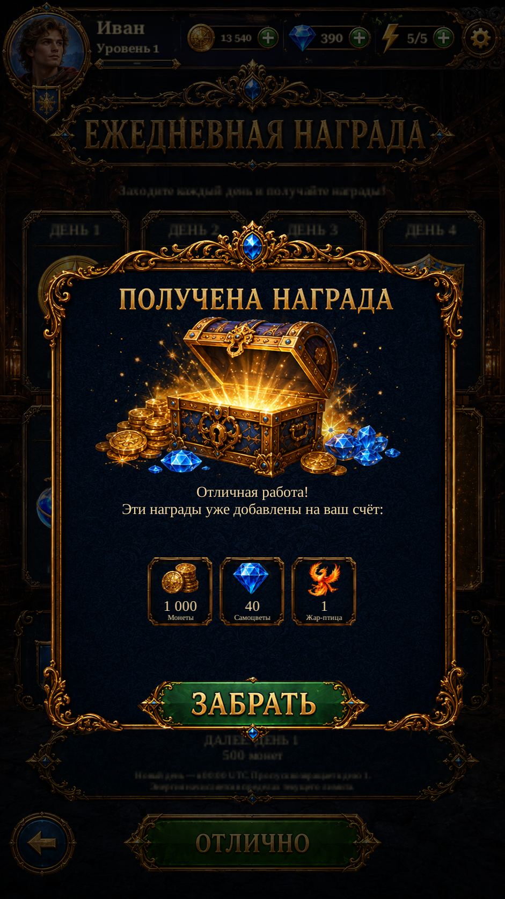

Reward Received · reference rebuild R1Reward Received · reference rebuild R1
Original Russian title and ЗАБРАТЬ button, original carved frame, isolated chest with a separate source glow layer, and fine gold reward cards. Only actual receipt rewards are displayed. Confirmation closes the receipt without granting again.
These are actual Unity captures with isolated test saves. The modal covers the real underlying page and its shared header. Live receipt counts, capped energy and empty states are preserved. The seven-type diagnostic fixture does not award items.
